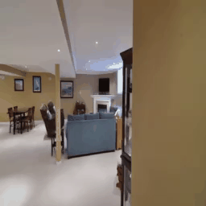
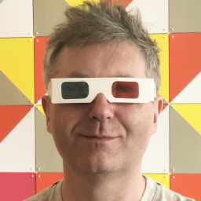
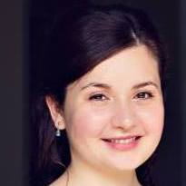

CVPR 2020 Tutorial on
Novel View Synthesis: From Depth-Based Warping to Multi-Plane Images and Beyond

Novel view synthesis is a long-standing problem at the intersection of computer graphics and computer vision.
Seminal work in this field dates back to the 1990s, with early methods proposing to interpolate either between corresponding pixels from the input images, or between rays in space.
Recent deep learning methods enabled tremendous improvements to the quality of the results, and brought renewed popularity to the field.
The teaser above shows novel view synthesis from different recent methods. From left to right: Yoon et al. [1], Mildenhall et al. [2], Wiles et al. [3], and Choi et al. [4]. Images and videos courtesy of the respective authors.
>>> The tutorial will be live here. <<<
To ask questions email orazio.gallo@gmail.com or type them in the YouTube chat.Goal of the Tutorial
In this tutorial we will first introduce the problem, including offering context and a taxonomy of the different methods. We will then have talks by the researchers behind the most recent approaches in the field. At the end of the tutorial we will have a roundtable discussion with all the speakers. If you have questions for the roundtable discussion, please send them to Orazio.Date and Location
The tutorial will take place on June 14th, 2020. The current plan is to have live presentations and to use Youtube to cast the content live. The link to the live cast will be posted here.Organizers
Invited Speakers
Rick Szeliski
Facebook
Pratul Srinivasan
UC Berkeley

Richard Tucker
Google

Olivia Wiles
University of Oxford

Tentative Program
| Talk Title | Speaker | |
| 9:20 - 9:50 | Novel View Synthesis: A Gentle Introduction | Organizers |
| 9:50 - 10:20 | Lumigraphs and Reflections | Rick |
| 10:20 - 10:50 | SynSin: Single Image View Synthesis | Olivia |
| 10:50 - 11:00 | Coffee break (15m) | |
|---|---|---|
| 11:00 - 11:30 | View synthesis with Multiplane Images | Richard |
| 11:30 - 12:00 | View Synthesis and Immersive Mixed Reality for VR devices | Gaurav |
| 12:00 - 12:45 | Lunch break (45m) | |
| 12:45 - 13:15 | View and Frame Interpolation for Consumer Light Field Cameras | Nima |
| 13:15 - 13:45 | NeRF: Representing Scenes as Neural Radiance Fields for View Synthesis | Pratul |
| 13:45 - 14:15 | Novel View Synthesis from Dynamic Scenes | Jae Shin |
| 14:15 - 14:30 | Coffee break (15m) | |
| 14:30 - 15:30 | Round Table Discussion With the Invited Speakers |